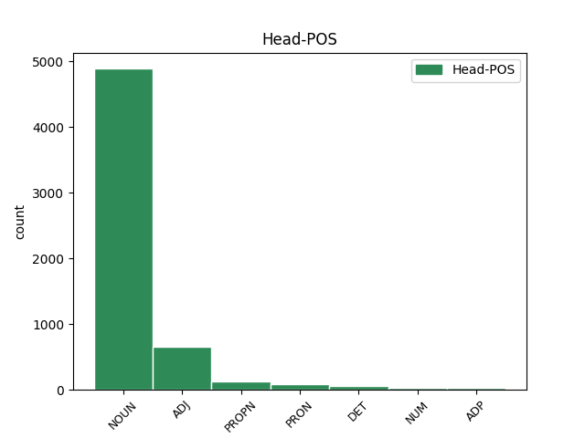
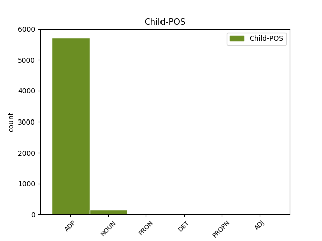

Distribution of features within this leaf



Agreement Rules sorted by frequency.
- When the dependent token is the underspecified dependency(udep) of the head token,
1 ( _ _ _ _ 0 _ _ _
2 3 _ _ _ _ 0 _ _ _
3 ) _ _ _ _ 0 _ _ _
4 Za _ _ _ _ 0 _ _ _
5 dio _ _ _ _ 0 _ _ _
6 građevinskog _ _ _ _ 0 _ _ _
7 područja _ _ _ _ 0 _ _ _
8 naselja _ _ _ _ 0 _ _ _
9 Novi _ _ _ _ 0 _ _ _
10 Vinodolski _ _ _ _ 0 _ _ _
11 NA1 _ _ _ _ 0 _ _ _
12 1 _ _ _ _ 0 _ _ _
13 - _ _ _ _ 0 _ _ _
14 registriranu _ _ _ _ 0 _ _ _
15 povijesnu _ _ _ _ 0 _ _ _
16 graditeljsku _ _ _ _ 0 _ _ _
17 cjelinu _ _ _ _ 0 _ _ _
18 , _ _ _ _ 0 _ _ _
19 moguća _ _ _ _ 0 _ _ _
20 su _ _ _ _ 0 _ _ _
21 odstupanja _ _ _ _ 0 _ _ _
22 od _ _ _ _ 0 _ _ _
23 zadanih _ _ _ _ 0 _ _ _
24 graničnih _ _ _ _ 0 _ _ _
25 vrijednosti _ _ _ _ 0 _ _ _
26 navedenih _ _ _ _ 0 _ _ _
27 u _ _ _ _ 0 _ _ _
28 člancima _ _ _ _ 0 _ _ _
29 27. _ _ _ _ 0 _ _ _
30 i _ _ _ _ 0 _ _ _
31 28. _ _ _ _ 0 _ _ _
32 Ovih _ _ _ _ 0 _ _ _
33 Odredbi _ _ _ _ 0 _ _ _
34 ali _ _ _ _ 0 _ _ _
35 samo _ _ _ _ 0 _ _ _
36 u _ _ _ _ 0 _ _ _
37 smislu _ _ _ _ 0 _ _ _
38 uvjeta _ _ _ _ 0 _ _ _
39 određenih _ _ _ _ 0 _ _ _
40 od _ _ _ _ 0 _ _ _
41 nadležnog _ _ _ _ 0 _ _ _
42 Konzervatorskog _ _ _ _ 0 _ _ _
43 odjela _ _ _ _ 0 _ _ _
44 ( _ _ _ _ 0 _ _ _
45 označeno _ _ _ _ 0 _ _ _
46 kao _ _ _ _ 0 _ _ _
47 gradsko _ _ _ _ 0 _ _ _
48 naselje _ _ _ _ 0 _ _ _
49 - _ _ _ _ 0 _ _ _
50 zone _ _ _ _ 0 _ _ _
51 14 _ _ _ _ 0 _ _ _
52 A _ _ _ _ 0 _ _ _
53 i _ _ _ _ 0 _ _ _
54 14 _ _ _ _ 0 _ _ _
55 B _ _ _ _ 0 _ _ _
56 na _ _ _ _ 0 _ _ _
57 kartografskom _ _ _ _ 0 _ _ _
58 prikazu prikaz NOUN Ncmsl Case=Loc|Gender=Masc|Number=Sing 0 _ _ _
59 br. _ _ _ _ 0 _ _ _
60 4.1. _ _ _ _ 0 _ _ _
61 » _ _ _ _ 0 _ _ _
62 Građevinska _ _ _ _ 0 _ _ _
63 područja _ _ _ _ 0 _ _ _
64 « _ _ _ _ 0 _ _ _
65 u u ADP Sl Case=Loc 58 udep _ _
66 mjerilu _ _ _ _ 0 _ _ _
67 1:5000 _ _ _ _ 0 _ _ _
68 ) _ _ _ _ 0 _ _ _
69 . _ _ _ _ 0 _ _ _
Disagree Examples:
1 Neki _ _ _ _ 0 _ _ _
2 tvrde _ _ _ _ 0 _ _ _
3 da _ _ _ _ 0 _ _ _
4 je _ _ _ _ 0 _ _ _
5 presuda _ _ _ _ 0 _ _ _
6 Veliji _ _ _ _ 0 _ _ _
7 Ramkovskom _ _ _ _ 0 _ _ _
8 napad napad NOUN Ncmsn Case=Nom|Gender=Masc|Number=Sing 0 _ _ _
9 na na ADP Sa Case=Acc 8 udep _ _
10 slobodu _ _ _ _ 0 _ _ _
11 medija _ _ _ _ 0 _ _ _
12 , _ _ _ _ 0 _ _ _
13 dok _ _ _ _ 0 _ _ _
14 drugi _ _ _ _ 0 _ _ _
15 tvrde _ _ _ _ 0 _ _ _
16 kako _ _ _ _ 0 _ _ _
17 dokazi _ _ _ _ 0 _ _ _
18 o _ _ _ _ 0 _ _ _
19 njegovim _ _ _ _ 0 _ _ _
20 kaznenim _ _ _ _ 0 _ _ _
21 djelima _ _ _ _ 0 _ _ _
22 govore _ _ _ _ 0 _ _ _
23 suprotno _ _ _ _ 0 _ _ _
24 . _ _ _ _ 0 _ _ _
1 Neki _ _ _ _ 0 _ _ _
2 tvrde _ _ _ _ 0 _ _ _
3 da _ _ _ _ 0 _ _ _
4 je _ _ _ _ 0 _ _ _
5 presuda _ _ _ _ 0 _ _ _
6 Veliji _ _ _ _ 0 _ _ _
7 Ramkovskom _ _ _ _ 0 _ _ _
8 napad _ _ _ _ 0 _ _ _
9 na _ _ _ _ 0 _ _ _
10 slobodu _ _ _ _ 0 _ _ _
11 medija _ _ _ _ 0 _ _ _
12 , _ _ _ _ 0 _ _ _
13 dok _ _ _ _ 0 _ _ _
14 drugi _ _ _ _ 0 _ _ _
15 tvrde _ _ _ _ 0 _ _ _
16 kako _ _ _ _ 0 _ _ _
17 dokazi dokaz NOUN Ncmpn Case=Nom|Gender=Masc|Number=Plur 0 _ _ _
18 o o ADP Sl Case=Loc 17 udep _ _
19 njegovim _ _ _ _ 0 _ _ _
20 kaznenim _ _ _ _ 0 _ _ _
21 djelima _ _ _ _ 0 _ _ _
22 govore _ _ _ _ 0 _ _ _
23 suprotno _ _ _ _ 0 _ _ _
24 . _ _ _ _ 0 _ _ _
1 Ramkovski _ _ _ _ 0 _ _ _
2 , _ _ _ _ 0 _ _ _
3 bivši _ _ _ _ 0 _ _ _
4 vlasnik _ _ _ _ 0 _ _ _
5 televizijske _ _ _ _ 0 _ _ _
6 postaje _ _ _ _ 0 _ _ _
7 A1 _ _ _ _ 0 _ _ _
8 , _ _ _ _ 0 _ _ _
9 četiriju _ _ _ _ 0 _ _ _
10 novina _ _ _ _ 0 _ _ _
11 i _ _ _ _ 0 _ _ _
12 drugih _ _ _ _ 0 _ _ _
13 poduzeća _ _ _ _ 0 _ _ _
14 , _ _ _ _ 0 _ _ _
15 osuđen _ _ _ _ 0 _ _ _
16 je _ _ _ _ 0 _ _ _
17 na _ _ _ _ 0 _ _ _
18 Kaznenom _ _ _ _ 0 _ _ _
19 sudu _ _ _ _ 0 _ _ _
20 u _ _ _ _ 0 _ _ _
21 Skoplju _ _ _ _ 0 _ _ _
22 14. _ _ _ _ 0 _ _ _
23 ožujka _ _ _ _ 0 _ _ _
24 na _ _ _ _ 0 _ _ _
25 13 _ _ _ _ 0 _ _ _
26 godina _ _ _ _ 0 _ _ _
27 zatvora _ _ _ _ 0 _ _ _
28 zbog _ _ _ _ 0 _ _ _
29 pranja _ _ _ _ 0 _ _ _
30 novca _ _ _ _ 0 _ _ _
31 , _ _ _ _ 0 _ _ _
32 kriminalne _ _ _ _ 0 _ _ _
33 zavjere _ _ _ _ 0 _ _ _
34 , _ _ _ _ 0 _ _ _
35 zloporabe _ _ _ _ 0 _ _ _
36 položaja _ _ _ _ 0 _ _ _
37 i _ _ _ _ 0 _ _ _
38 utaje _ _ _ _ 0 _ _ _
39 poreza _ _ _ _ 0 _ _ _
40 ; _ _ _ _ 0 _ _ _
41 19 _ _ _ _ 0 _ _ _
42 suučesnika _ _ _ _ 0 _ _ _
43 dobilo _ _ _ _ 0 _ _ _
44 je _ _ _ _ 0 _ _ _
45 zatvorske _ _ _ _ 0 _ _ _
46 kazne kazna NOUN Ncfpa Case=Acc|Gender=Fem|Number=Plur 0 _ _ _
47 u u ADP Sl Case=Loc 46 udep _ _
48 trajanju _ _ _ _ 0 _ _ _
49 od _ _ _ _ 0 _ _ _
50 dvije _ _ _ _ 0 _ _ _
51 do _ _ _ _ 0 _ _ _
52 sedam _ _ _ _ 0 _ _ _
53 godina _ _ _ _ 0 _ _ _
54 . _ _ _ _ 0 _ _ _
1 " _ _ _ _ 0 _ _ _
2 Dojam _ _ _ _ 0 _ _ _
3 je _ _ _ _ 0 _ _ _
4 da _ _ _ _ 0 _ _ _
5 su _ _ _ _ 0 _ _ _
6 koraci _ _ _ _ 0 _ _ _
7 poduzeti poduzeti ADJ Appmpny Case=Nom|Definite=Def|Degree=Pos|Gender=Masc|Number=Plur|VerbForm=Part|Voice=Pass 0 _ _ _
8 prema prema ADP Sl Case=Loc 7 udep _ _
9 tim _ _ _ _ 0 _ _ _
10 medijima _ _ _ _ 0 _ _ _
11 , _ _ _ _ 0 _ _ _
12 kojima _ _ _ _ 0 _ _ _
13 su _ _ _ _ 0 _ _ _
14 izrečene _ _ _ _ 0 _ _ _
15 presude _ _ _ _ 0 _ _ _
16 , _ _ _ _ 0 _ _ _
17 selektivni _ _ _ _ 0 _ _ _
18 te _ _ _ _ 0 _ _ _
19 da _ _ _ _ 0 _ _ _
20 institucije _ _ _ _ 0 _ _ _
21 ne _ _ _ _ 0 _ _ _
22 koriste _ _ _ _ 0 _ _ _
23 iste _ _ _ _ 0 _ _ _
24 metode _ _ _ _ 0 _ _ _
25 u _ _ _ _ 0 _ _ _
26 provođenju _ _ _ _ 0 _ _ _
27 zakona _ _ _ _ 0 _ _ _
28 prema _ _ _ _ 0 _ _ _
29 svim _ _ _ _ 0 _ _ _
30 medijima _ _ _ _ 0 _ _ _
31 " _ _ _ _ 0 _ _ _
32 , _ _ _ _ 0 _ _ _
33 izjavila _ _ _ _ 0 _ _ _
34 je _ _ _ _ 0 _ _ _
35 za _ _ _ _ 0 _ _ _
36 SETimes _ _ _ _ 0 _ _ _
37 ravnateljica _ _ _ _ 0 _ _ _
38 Medijskog _ _ _ _ 0 _ _ _
39 instituta _ _ _ _ 0 _ _ _
40 Makedonije _ _ _ _ 0 _ _ _
41 Biljana _ _ _ _ 0 _ _ _
42 Petkovska _ _ _ _ 0 _ _ _
43 . _ _ _ _ 0 _ _ _
1 Neki _ _ _ _ 0 _ _ _
2 novinari _ _ _ _ 0 _ _ _
3 , _ _ _ _ 0 _ _ _
4 a _ _ _ _ 0 _ _ _
5 posebice _ _ _ _ 0 _ _ _
6 bivši _ _ _ _ 0 _ _ _
7 zaposlenici _ _ _ _ 0 _ _ _
8 A1 _ _ _ _ 0 _ _ _
9 TV _ _ _ _ 0 _ _ _
10 , _ _ _ _ 0 _ _ _
11 tvrde _ _ _ _ 0 _ _ _
12 da _ _ _ _ 0 _ _ _
13 taj _ _ _ _ 0 _ _ _
14 slučaj slučaj NOUN Ncmsn Case=Nom|Gender=Masc|Number=Sing 0 _ _ _
15 , _ _ _ _ 0 _ _ _
16 pod pod ADP Si Case=Ins 14 udep _ _
17 nazivom _ _ _ _ 0 _ _ _
18 " _ _ _ _ 0 _ _ _
19 Paukova _ _ _ _ 0 _ _ _
20 mreža _ _ _ _ 0 _ _ _
21 " _ _ _ _ 0 _ _ _
22 , _ _ _ _ 0 _ _ _
23 predstavlja _ _ _ _ 0 _ _ _
24 borbu _ _ _ _ 0 _ _ _
25 između _ _ _ _ 0 _ _ _
26 vlade _ _ _ _ 0 _ _ _
27 i _ _ _ _ 0 _ _ _
28 tada _ _ _ _ 0 _ _ _
29 najmoćnije _ _ _ _ 0 _ _ _
30 televizijske _ _ _ _ 0 _ _ _
31 postaje _ _ _ _ 0 _ _ _
32 u _ _ _ _ 0 _ _ _
33 Makedoniji _ _ _ _ 0 _ _ _
34 , _ _ _ _ 0 _ _ _
35 koja _ _ _ _ 0 _ _ _
36 je _ _ _ _ 0 _ _ _
37 kritizirala _ _ _ _ 0 _ _ _
38 njezinu _ _ _ _ 0 _ _ _
39 politiku _ _ _ _ 0 _ _ _
40 i _ _ _ _ 0 _ _ _
41 podupirala _ _ _ _ 0 _ _ _
42 oporbu _ _ _ _ 0 _ _ _
43 . _ _ _ _ 0 _ _ _